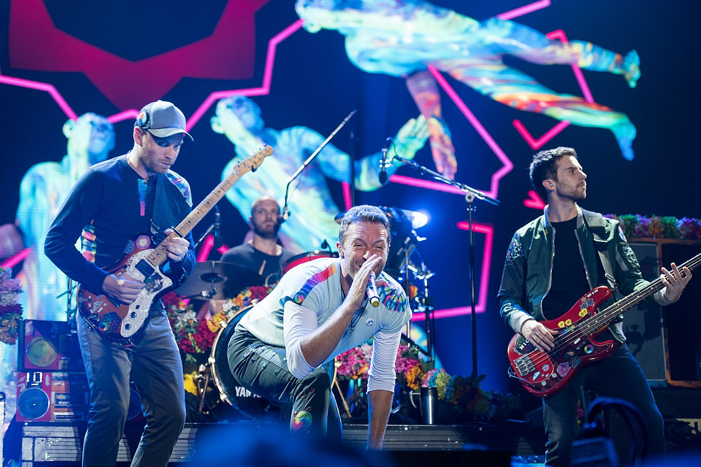

#1: Drake
Aubrey Drake Graham, noto semplicemente come Drake (Toronto, 24 ottobre 1986), è un rapper,
cantautore, attore e produttore discografico canadese.
Originario di Toronto, Canada, Drake divenne inizialmente famoso nei primi anni 2000 per aver
interpretato un ruolo da attore nella serie televisiva Degrassi: The Next Generation. Nel 2006
decise di intraprendere la carriera da rapper e cantante, pubblicando il suo primo mixtape, Room for
Improvement, seguito da altri due progetti, Comeback Season e soprattutto So Far Gone, che lo
aiutarono a farsi notare nella scena hip hop, tanto da riuscire, nel 2009, a firmare un contratto
discografico con l'etichetta di Lil Wayne, Young Money.
Nel 2010 pubblicò il suo primo album in studio, Thank Me Later, che debuttò in prima posizione nella
Billboard 200 e venne presto certificato disco di platino dalla RIAA. Le sue due successive
pubblicazioni, Take Care e Nothing Was the Same, vennero rilasciati rispettivamente nel 2011 e nel
2013. Nel 2015 pubblicò due mixtape, If You're Reading This It's Too Late e What a Time to Be Alive,
di cui il secondo in collaborazione con Future, entrambi fortemente influenzati da produzioni e
sonorità trap. Ambedue i lavori furono certificati dischi di platino negli Stati Uniti. Il suo
quarto album in studio, Views, influenzato dal genere dancehall, gli fece battere molti record,
restando al primo posto nella Billboard 200 per dieci settimane di seguito, diventando il primo
album pubblicato da un artista maschile a farlo, dieci anni dopo l'ultima volta. Il secondo singolo
del progetto, One Dance, raggiunse la prima posizione delle classifiche di moltissimi Paesi nel
mondo; nel 2016, Drake rimase contemporaneamente al primo posto sia della Billboard 100, sia della
Billboard 200, per otto settimane. Il primo singolo estratto, Hotline Bling, ottenne il premio per
la miglior canzone rap ai Grammy Awards. Nel 2017 rilasciò la compilation More Life, definita
dall'artista come una "playlist", per dar spazio ad altri artisti nel progetto. Nel 2018 i singoli
God's Plan, estratto dall'EP Scary Hours, e Nice for What gli consentirono di stabilire nuovamente
altri record: il primo debuttò in cima alla Billboard 100 e vi rimase per undici settimane di
seguito, venendo poi rimpiazzato proprio dal secondo, che debuttò direttamente in prima posizione,
rendendo Drake uno dei pochissimi artisti nella storia ad avere due singoli consecutivi al primo
posto in classifica. Drake detiene svariati record delle classifiche Billboard; è detentore del
record per il maggior numero di canzoni di un artista solista comparse in classifica (154), il
maggior numero di canzoni presenti contemporaneamente in una settimana nella Billboard Hot 100 (24),
il maggior tempo di presenza nella classifica con almeno una canzone (431 settimane) e il maggior
numero di canzoni debuttate nella Hot 100 in una settimana (21). È uno dei rapper di maggior
successo degli ultimi 20 anni, avendo venduto circa 86 milioni di unità a livello mondiale. È
inoltre proprietario di un'etichetta, OVO Sound, fondata nel 2012.
Biografia
Aubrey Drake Graham è nato a Toronto, Ontario nell'ottobre del 1986, da padre di origine
afroamericane, nato a Memphis, Tennessee, e madre canadese. Il padre è musicista mentre
la famiglia della madre è coinvolta nell'arte. Graham ha frequentato il Forest Hill Collegiate
Institute e ha iniziato a recitare alle scuole superiori dopo essere stato suggerito ad un
agente.
Graham ha interpretato il ruolo di Jimmy Brooks, lo studente ferito in una sparatoria a scuola,
portandolo ad assumere il primo ruolo con disabilità fisiche nella serie Degrassi: The Next
Generation, a partire dal 2001. Ha poi partecipato al film Charlie Bartlett, assieme a Anton Yelchin
e Robert Downey Jr., che verrà distribuito sul mercato del Nord America il 1º febbraio 2008.
Oltre a fare l'attore, il rapper e il cantautore, Drake è anche un produttore, che produce musica
sotto lo pseudonimo Champagne Papi.
#2: Ed Sheeran
Edward Christopher Sheeran (Halifax, 17 febbraio 1991) è un cantautore e polistrumentista britannico.
Il suo stile musicale non ha mai subito particolari deviazioni artistiche, basato prevalentemente
sulla musica pop con elementi folk, soul e contemporary R&B, oltre a forti influenze derivanti dalla
musica tradizionale irlandese. Ha ottenuto grande successo e popolarità in Nord America, Oceania ed
Europa, soprattutto in Regno Unito, suo paese natale, dove ha infranto svariati record di vendite.
Nel 2011 l'artista ha firmato un contratto discografico con la Asylum Records, sotto la quale ha
raggiunto la fama internazionale con il suo terzo album +, certificato sette volte disco di platino
in Regno Unito, dove ha inoltre trascorso 200 settimane nella Official Albums Chart. Dopo aver
compiuto sporadiche apparizioni nell'album Red di Taylor Swift, nonché nel relativo tour mondiale,
nel 2014 ha pubblicato X, che ha superato il successo dell'album precedente, vendendo oltre 10
milioni di copie a livello globale, risultando l'album più venduto dell'anno e conquistando la vetta
delle classifiche musicali di 15 Paesi, trainato dai singoli Sing, Don't, Thinking Out Loud,
Bloodstream e Photograph, divenuti delle vere e proprie hit internazionali. Nel 2017 è stata la
volta di ÷, anch'esso di grande successo commerciale, grazie soprattutto a due dei cinque estratti,
Shape of You e Perfect, che hanno guidato l'album verso la prima posizione dei maggiori mercati
musicali. Il relativo ÷ Tour si è rivelata la tournée più redditizia e vista nella storia della
musica, con un incasso di più di 737 milioni di dollari e un pubblico di 8,5 milioni di persone,
superando lo U2 360° Tour degli U2.
Secondo le statistiche di Spotify, Sheeran si è posizionato secondo tra gli artisti più ascoltati
nell'ultimo decennio.
Persona molto attiva nel supporto delle associazioni benefiche, Sheeran è apprezzato anche per le
sue qualità di scrittore e compositore, tanto da essere divenuto autore di brani per diversi
artisti. È stato inoltre nominato a sei Grammy Award e ad otto BRIT Award (dei quali quattro vinti).
Secondo la rivista statunitense Forbes, con un patrimonio personale stimato in 57 milioni di dollari
(corrispondenti a 47,8 milioni di euro), nel 2015 Ed Sheeran è stata la 27ª celebrità più ricca del
mondo. Nell'aprile 2017 è stato invece inserito dal settimanale Time fra le 100 personalità più
influenti del pianeta.
Biografia
Ed Sheeran ha vissuto i primi anni della sua vita a Hebden Bridge, nel West Yorkshire, prima di
trasferirsi a Framlingham, Suffolk. Suo padre, John Sheeran, è un curatore d'arte. Sua madre Imogen
Lock è una designer di gioielli. Ha un fratello maggiore, Matthew, che compone musica classica. I
suoi nonni paterni erano irlandesi ed è stato educato secondo la religione cattolica. Ha imparato a
suonare la chitarra molto presto e ha cominciato a scrivere canzoni durante la sua permanenza presso
la Scuola Thomas Mills High di Framlingham.
I ricordi della sua prima infanzia, ai quali Ed Sheeran fa riferimento in un'intervista al Zane Lowe
Show, includono l'ascolto di Van Morrison nei suoi numerosi viaggi a Londra con i suoi genitori e un
concerto con Damien Rice in Irlanda, quando aveva 11 anni.
#3: Eminem

Eminem, pseudonimo di Marshall Bruce Mathers III (St. Joseph, 17 ottobre 1972), è un rapper,
produttore discografico e attore statunitense.
È considerato uno dei migliori artisti hip hop di sempre, oltre che di tutta la musica hip hop degli
anni 2000. Cresciuto a Detroit, è stato scoperto nel 1997 dal rapper e produttore discografico Dr.
Dre e ha ottenuto il primo successo due anni più tardi con il singolo My Name Is. Con il terzo album
The Marshall Mathers LP, Eminem ha stabilito il record di album hip hop dalle vendite più veloci di
sempre e terzo album dalle vendite più veloci di sempre, con 1.760.049 copie solo negli Stati Uniti
nella prima settimana, mentre il successivo The Eminem Show è stato il più venduto e premiato di
tutto il 2002, con 7,9 milioni di copie vendute solo negli Stati Uniti in quell'anno.
Durante gli MTV Europe Music Awards 2013 ha ricevuto il premio Global Icon, diventando così il
quarto artista nel mondo ad aver ottenuto tale riconoscimento, dopo i Queen, Bon Jovi e Whitney
Houston. Ai Grammy Awards 2014 ha ricevuto il premio come miglior album rap per l'album The Marshall
Mathers LP 2 e quello come miglior collaborazione con il singolo The Monster con Rihanna. Nel 2014
Eminem è diventato inoltre il primo artista di sempre ad avere due dischi di diamante digitali, Love
the Way You Lie e Not Afraid, che hanno rispettivamente 12 e 10 platini negli Stati Uniti, e nel
2018 anche il brano Lose Yourself viene certificato disco di diamante. È inoltre l'unico rapper
insieme a Tupac Shakur con più di un album ad essere certificato disco di diamante, ossia The
Marshall Mathers LP e The Eminem Show.
Parallelamente alla sua attività come rapper, Eminem si è affermato anche come produttore
discografico di album hip hop, producendo artisti attraverso la propria etichetta discografica, la
Shady Records, fondata con il suo manager Paul Rosenberg. A partire dal 2002 ha intrapreso la
carriera come attore, recitando in 8 Mile, diretto da Curtis Hanson e che ottenne un gran successo;
il brano Lose Yourself, contenuto nel film, ha permesso al rapper di vincere l'Oscar alla migliore
canzone nel 2003, prima canzone hip hop della storia ad ottenere tale riconoscimento.
Il premio Nobel Séamus Heaney ha lodato Eminem per l'energia retorica e per l'interesse suscitato
dai testi delle sue canzoni, mentre Elton John lo ha paragonato, per i successi conseguiti, ad altri
musicisti celebri quali Mick Jagger e Jimi Hendrix. Nel 2004 la rivista Rolling Stone ha posizionato
Eminem al numero 83 nella propria lista dei 100 migliori artisti di tutti i tempi.
Al 2018 ha venduto più di 382 milioni di dischi nel mondo e più di 108 milioni di singoli digitali
negli Stati Uniti.
Biografia - gli inizi
Marshall Mathers è di origini britanniche, tedesche, svizzere, polacche e lussemburghesi. I suoi
genitori, Marshall Bruce Mathers II e Debbie Briggs, erano due musicisti rock piuttosto poveri e per
questo costretti a trasferirsi da una parte all'altra degli Stati Uniti d'America, in condomini e
roulotte. Quando Marshall aveva appena sei mesi, la madre lo portò via dal padre accusato di
molestia che poi lui smentirà in una lettera diretta a Marshall dicendogli che era innocente. A 12
anni, insieme alla madre, si stabilì definitivamente a Detroit. Qui Marshall attraversò
un'adolescenza difficile: litigava spesso con la madre, sia per i problemi di droga di quest'ultima
che per le numerose storie che essa intraprendeva con uomini che trattavano male anche lo stesso
Marshall.
Aveva anche diversi problemi con la scuola: fu, infatti, bocciato tre volte, a causa delle numerose
assenze. Marshall era anche molto timido: infatti, era etichettato come "lo sfigato della classe", e
per questo, era sovente oggetto di derisione e maltrattamento da parte degli altri compagni e da uno
in particolare, un certo De Angelo Bailey, che lo mandò in coma per cinque giorni quando Marshall
aveva solo otto anni. Quest'ultimo nel 2001 lo accusò di aver invaso la sua privacy e di averlo
messo in cattiva luce nella canzone Brain Damage. Anche se, come ha ripetuto più volte, ha
dichiarato di non essersi pentito di quello che ha fatto. Tuttavia, nell'ottobre del 2003 le accuse
furono archiviate dal tribunale.
Alla Lincoln High School, a Warren, conobbe il rapper e futuro migliore amico Proof e la futura
moglie Kimberly Anne Scott. A 17 anni abbandonò il liceo e iniziò una relazione con Kim. Il giovane
rapper iniziò la sua carriera musicale ancora prima che Kim rimanesse incinta, anche se per
sostenere la famiglia fu costretto a fare altri lavori; in particolare, lavorò a lungo come cuoco e
lavapiatti per il locale "Gilbert's Lodge", a St. Clair Shores, Michigan. Nel 1991 è distrutto dal
dolore per il suicidio dello zio Ronnie con cui aveva un legame particolare e che citerà in Stan,
Cleanin' Out My Closet e My Dad's Gone Crazy; sul braccio sinistro ha tatuato "Ronnie R.I.P." in
memoria del parente scomparso.
Nel 2006 subirà la dura perdita del suo migliore amico Proof, morto in una sparatoria sulla 8 Mile
Road; curiosamente solo un anno prima aveva girato insieme a lui il video per la canzone Like Toy
Soldiers, in cui subiva la medesima sorte. In quel periodo sua madre assumeva farmaci come Vicodin e
Valium; suo figlio l'ha rimproverata a più riprese di farmacodipendenza, ma la madre ha più volte
cercato di smentire, arrivando anche a denunciare il figlio per diffamazione.
#4: The weekend

The Weeknd, pseudonimo di Abel Makkonen Tesfaye (Toronto, 16 febbraio 1990), è un cantautore,
produttore discografico e attore canadese.
Dopo aver debuttato con la raccolta Trilogy (2012) e il primo album in studio Kiss Land (2013), è
salito alla ribalta del panorama musicale internazionale nel 2015 con la pubblicazione del secondo
album, Beauty Behind the Madness, supportato dai singoli di successo planetario The Hills e Can't
Feel My Face, entrambi in grado di raggiungere la prima posizione della Billboard Hot 100. L'anno
successivo viene messo in commercio Starboy, il cui omonimo singolo, una collaborazione con i Daft
Punk, ha eguagliato i risultati dei predecessori. Dopo tre anni di parziale assenza dalle scene
musicali, durante la quale ha messo in commercio il suo primo EP My Dear Melancholy, (2018), torna
nel 2020 con il quarto album After Hours, anticipato dalla hit Blinding Lights, posizionatosi al
numero uno in oltre venti paesi.
È considerato tra gli esponenti di maggiore rilievo e successo commerciale nel panorama alternative
R&B con più di 100 milioni di copie vendute in tutto il mondo. Durante la sua carriera è stato
premiato con tre Grammy Award, otto Billboard Music Award, due American Music Awards, un MTV Europe
Music Awards ed ha ricevuto una candidatura ai Premi Oscar per il brano Earned It inciso per la
colonna sonora del film Cinquanta sfumature di grigio.
Biografia
Abel Makkonen Tesfaye è nato il 16 febbraio 1990 a Toronto, Ontario, ed è cresciuto nel quartiere di
Scarborough, un quartiere all'estremità orientale della città. È l'unico figlio di Makkonen e Samra
Tesfaye, etiopi immigrati in Canada alla fine degli anni '80.
Durante la sua gioventù, la madre avrebbe svolto diversi lavori per sostenere la famiglia, spesso
assumendo un doppio lavoro come infermiera e ristoratrice. Avrebbe anche frequentato la scuola
serale per imparare l'inglese. Suo padre ha poi abbandonato la famiglia, spingendo la nonna materna
a prendersi cura di Abel. Questo permise all'artista di diventare fluente in Amharico durante
l'infanzia, un linguaggio semitico che usa come prima lingua. Sua nonna gli fece frequentare una
chiesa ortodossa etiopica. A proposito di suo padre, The Weeknd ha dichiarato: "L'ho visto ogni
tanto quando avevo sei anni e poi di nuovo quando avevo 11 o 12 anni, e aveva una nuova famiglia e
figli. Non so nemmeno dove ha vissuto. Vorrei vederlo, come una notte, sono sicuro che sia un’ottima
persona, non l'ho mai giudicato, non era violento, non era alcolizzato, non era uno stronzo, non
c'era proprio".
Descrivendo i suoi anni di adolescente come "KIDS senza l'AIDS", The Weeknd iniziò a fumare la
marijuana a 11 anni e poi passò a droghe più pesanti, spesso compiendo piccoli furti da supermercati
locali con un amico di scuola superiore per completare il suo uso di ecstasy, ossicodone, xanax,
cocaina, psilocibina e ketamina.
Ha frequentato sia l'Istituto Collegiato di West Hill che l'Istituto Collegiato di Birchmount Park
nel distretto, ma non ha conseguito il diploma in nessuna di queste scuole superiori. Ha scelto di
uscire da quest'ultimo nel 2007, lasciando anche la sua casa, situata al numero 65 di Spencer Ave,
Parkdale. Il suo nome di scena è ispirato dal suo abbandono della scuola superiore, anche se il
produttore Jeremy Rose afferma che il nome fu una sua idea. L'ortografia è stata modificata al fine
di evitare problemi di marchio con la band canadese The Weekend.
#5: Rihanna

Rihanna, () all'anagrafe Robyn Rihanna Fenty (Saint Michael, 20 febbraio 1988), è una cantante,
attrice, modella, imprenditrice e diplomatica barbadiana.
Si è trasferita negli Stati Uniti d'America all'età di 16 anni grazie a un contratto discografico,
sotto la guida di Evan Rogers. Ha debuttato nel 2005 all'età di 17 anni con l'album Music of the
Sun, entrato alla decima posizione della Billboard 200, e il singolo di successo Pon de Replay, che
ha raggiunto la seconda posizione della Billboard Hot 100. Un anno dopo ha pubblicato il secondo
album A Girl Like Me, il cui singolo SOS è divenuto la sua prima numero uno nella classifica
statunitense, mentre nel 2007 ha consolidato la sua fama grazie al terzo album Good Girl Gone Bad e
alle sue riedizioni, da cui sono stati estratti i singoli Umbrella, Don't Stop the Music, Disturbia
e Take a Bow.
Dopo Rated R, uscito nel 2009, portato al successo grazie ai singoli Russian Roulette e Rude Boy, è
tornata nel 2010 con il quinto album Loud, da cui vengono estratti i singoli di successo Only Girl
(In the World), What's My Name? e S&M. Nel 2011 ha pubblicato il sesto album Talk That Talk,
contenente il singolo We Found Love con Calvin Harris, diventato il più venduto della cantante. Nel
2012 è stata la volta del settimo album Unapologetic, contenente le hit mondiali Diamonds e Stay.
Dopo una pausa di quattro anni, nel 2016 è tornata sulle scene musicali con l'ottavo album Anti.
In tutta la sua carriera ha venduto oltre 60 milioni di album, 215 milioni di tracce digitali di cui
100 milioni solo entro i confini statunitensi, che la pongono tra gli artisti di maggior successo
nel panorama discografico internazionale. Il primo singolo dell'ottavo album, Work, diviene il
quattordicesimo singolo della cantante ad arrivare al primo posto della Billboard Hot 100, facendo
di Rihanna la terza artista in assoluto ad avere più hit al numero uno della classifica
statunitense, superando Michael Jackson (13 singoli) e ponendosi dietro solo a Mariah Carey (18
singoli) e ai Beatles (20 singoli). A giugno 2019 Rihanna risulta essere l'artista femminile più
ricca del mondo secondo la rivista Forbes, che le attribuisce un patrimonio stimato di circa 600
milioni di dollari.
Nel corso della sua carriera Rihanna ha accumulato nove Grammy Awards (prima artista della sua
nazione ad aggiudicarsi il prestigioso riconoscimento), tredici American Music Awards, un ugual
numero di Billboard Music Awards e due BRIT Awards, oltre ad aver ricevuto un riconoscimento
speciale, l'Icon Award, agli American Music Awards del 2013 per aver influenzato profondamente la
cultura pop a livello globale e il Fashion Icon Award del 2014 dal Council of Fashion Designers of
America. Il 21 settembre 2018 Mia Mottley, primo ministro di Barbados, ha nominato Rihanna
ambasciatrice straordinaria e plenipotenziaria, affidandole la responsabilità di promuovere il
sistema educativo, il turismo e gli investimenti per l'isola.
Biografia - gli inizi
Rihanna è nata a Bridgetown, nell'isola di Barbados, il 20 febbraio 1988 da Ronald Fenty, un capo
magazziniere metà afro-barbadiano e metà irlandese, e Monica Braithwaite Fenty, una contabile nativa
della Guyana, ma per metà afro-americana. Rihanna ha due fratelli minori di nome Rorrey e Rajad ed
ha, inoltre, due sorelle ed un fratello dal lato paterno (Kandy, Samantha e Jamie) nati da tre madri
diverse prima del matrimonio dei genitori della cantante.
La sua infanzia è stata profondamente segnata dalla dipendenza da cocaina del padre e dal divorzio
dei suoi genitori, avvenuto quando lei aveva quattordici anni. Ha frequentato le scuole elementari
nel suo paese natale, presso l'istituto Charles F. Broome Memorial School, dove molto spesso è stata
vittima di atti di bullismo a causa del suo colorito di pelle troppo «chiaro» rispetto ai compagni.
È cresciuta ascoltando musica reggae ed ha iniziato a cantare all'età di 7 anni. Successivamente ha
studiato presso la Combermere School, dove ha formato un trio musicale con due sue compagne di
classe all'età di quindici anni. Ha prestato servizio nei Barbados Cadet Corp, il corpo
d'addestramento basico delle forze di difesa barbadiane, dove aveva come sergente istruttore la
cantante Shontelle.
Nel 2003 Rihanna e il suo gruppo sono stati presentati al produttore Evan Rogers, che trascorreva le
vacanze a Barbados con sua moglie. Il gruppo si esibì con il singolo delle Destiny's Child Emotions.
L'anno successivo, si è recata con la madre a Stamford in Connecticut per raggiungere l'abitazione
di Rogers. Appena compiuti i sedici anni, la ragazza si è trasferita negli Stati Uniti d'America
seguendo gli spostamenti di Evan e sua moglie. In seguito Carl Sturken l'ha aiutata a incidere
quattro canzoni demo, tra le quali la ballata Last Time, la reinterpretazione di Whitney Houston For
the Love of You e quello che sarebbe divenuto il suo primo successo, Pon de Replay. I demo sono
stati spediti a varie case discografiche. Alcune sue incisioni arrivarono alla Def Jam Recordings,
che le ha offerto un contratto per sei album.
#6: Kanye West
Kanye Omari West (/ˈkɑːnjeɪ/), anche noto come Kanye West (Atlanta, 8 giugno 1977) è un musicista,
beatmaker, rapper, produttore discografico, cantautore, regista e stilista statunitense.
West è diventato famoso come produttore per la Roc-A-Fella Records, dove ha poi ottenuto numerosi
riconoscimenti grazie al suo lavoro sull'album di Jay-Z The Blueprint, e a canzoni di successo per
molti artisti musicali tra cui Alicia Keys, Ludacris, e Janet Jackson. Il suo stile di produzione
inizialmente usato prevedeva campionamenti vocali di acuti provenienti da canzoni soul incorporati
con i suoi strumenti. Tuttavia le produzioni successive lo videro ampliare la sua tavolozza musicale
esprimendo influenze R&B degli anni '70, baroque pop, trip hop, arena rock, folk, alternativa,
elettronica, synthpop, e musica classica.
Ha pubblicato il suo primo album, The College Dropout, nel 2004; il secondo, Late Registration, nel
2005; il terzo, Graduation, nel 2007; il quarto, 808s & Heartbreak, nel 2008; il quinto, My
Beautiful Dark Twisted Fantasy, è stato pubblicato nel 2010; nel 2013, Yeezus, il sesto, mentre nel
2016 il settimo, The Life Of Pablo. Nel 2018 annuncia la pubblicazione per l'estate di cinque
progetti discografici prodotti da lui, tra i quali il suo ottavo album, Ye, pubblicato nel giugno
dello stesso anno, e Kids See Ghosts, disco nato dalla collaborazione tra West e Kid Cudi dal nome
omonimo. Inoltre ha collaborato insieme a Jay-Z per la realizzazione di Watch the Throne, pubblicato
nel 2011. I suoi primi cinque album da solista, ognuno dei quali ha raggiunto il disco di platino
negli Stati Uniti, furono premiati dalla critica e ricevettero numerosi premi, tra cui 21 Grammy
Awards.
Tutti gli album hanno riscontrato un grande successo commerciale, con My Beautiful Dark Twisted
Fantasy che diventa il suo quarto album consecutivo al nº1 negli Stati Uniti. West, fino al luglio
2011, ha cinque canzoni che hanno superato i tre milioni di copie digitali nel suolo statunitense:
Gold Digger con 3 086 000 copie, Stronger con 4 402 000, Heartless con 3 742 000, ET con oltre 5 000
000 e Love Lockdown con oltre 3 000 000. Questo lo porta a essere il terzo artista con più vendite
digitali negli anni 2000. Avendo venduto più di 30 milioni di brani digitali negli Stati Uniti, West
è uno degli artisti che ha venduto di più digitalmente di tutti i tempi.
Biografia
Kanye è nato ad Atlanta, in Georgia . Quando aveva tre anni, i suoi genitori divorziarono, e lui e
sua madre si trasferirono a Chicago, nell'Illinois. Suo padre, Ray West, è un ex Black Panther che
fu uno dei primi fotogiornalisti neri al The Atlanta Journal-Constitution, mentre adesso è un
consulente cristiano. Sua madre, Dr. Donda West, fu una professoressa di inglese alla Clark Atlanta
University, e presidente del Dipartimento di Inglese alla Chicago State University prima di
diventare la manager del figlio. Kanye è cresciuto in un contesto borghese, frequentando la Polaris
High School nella periferia di Oak Lawn, in Illinois dopo avere vissuto a Chicago. Alla domanda sui
propri voti presi al liceo West rispose: "Prendevo A e B. E non mi impegnavo nemmeno".
Dopo il liceo West frequentava corsi d'arte presso l'American Academy of Art di Chicago, ed era
anche iscritto alla Chicago State University, ma si ritirò per potersi concentrare sulla sua
carriera musicale. Mentre frequentava ancora la scuola West produceva per artisti locali. In seguito
divenne famoso grazie alla produzione di singoli di successo per importanti artisti hip-hop e R&B,
tra i quali Jay-Z, Talib Kweli, Cam'ron, Common, Jermaine Dupri, The Game, Alicia Keys, Janet
Jackson, John Legend ed altri.
#7: Coldplay

I Coldplay sono un gruppo musicale britannico formatosi a Londra nel 1997.
La band è composta da Chris Martin (voce, pianoforte, chitarra acustica), Jonny Buckland (chitarra
elettrica), Guy Berryman (basso) e Will Champion (batteria). I quattro musicisti si conobbero alla
University College di Londra e fondarono il gruppo che cambiò diversi nomi tra il 1996-1998, prima
in Pectoralz, poi Starfish ed in seguito definitivamente Coldplay; Il direttore creativo Phil Harvey
è conosciuto per essere il quinto membro della formazione.
I Coldplay raggiunsero la fama mondiale con il loro singolo Yellow, contenuto nel loro album di
debutto Parachutes (2000). Il brano diventò presto una hit e nel luglio 2000 arrivò a piazzarsi alla
quarta posizione della classifica dei singoli britannica. Il loro secondo album A Rush of Blood to
the Head (2002), vinse un NME Awards come album dell'anno e segna, dunque, la loro consacrazione e
consente alla band di acquisire notorietà in tutto il mondo. L'album si piazzò direttamente al 1º
posto della Official Albums Chart e al 5º posto della Billboard 200. La loro successiva
pubblicazione, X&Y (2005) ricevette critiche positive ma anche critiche inferiori all'album
precedente ma riuscì comunque a tenere i ritmi di vendita dei precedenti album risultando il più
venduto del 2005. Con il loro quarto album in studio Viva la vida or Death and All His Friends
(2008), prodotto da Brian Eno, il gruppo ottenne numerose recensioni favorevoli con una vendita di
oltre 10 milioni di copie, oltre alla vittoria di tre Grammy Award. Mylo Xyloto, il quinto album,
esce ad ottobre del 2011 ed entra nelle top ten di oltre 30 paesi vendendo più di 8 milioni di copie
e diventando l'album più venduto del Regno Unito. Nel 2014 esce il sesto album Ghost Stories, che
raggiunge la prima posizione dell'iTunes Store in oltre 100 paesi, con una vendita pari a 3,7
milioni di copie. Nel 2015 è stata la volta del settimo album in studio A Head Full of Dreams, che
ha venduto 5 milioni di copie in tutto il mondo. A livello mondiale i Coldplay hanno venduto oltre
100 milioni di album, facendo di loro tra gli artisti mondiali ad averne venduto di più. Durante la
loro carriera i Coldplay hanno vinto 107 premi tra cui 9 BRIT Award (record), 7 Grammy Award, 7 MTV
Europe Music Awards e 6 MTV Video Music Awards. Con il loro A Head Full of Dreams Tour, i Coldplay
si sono confermati tra gli artisti più importanti della storia della musica, infatti il loro tour
risulta essere il terzo più grande di tutti i tempi, raccogliendo oltre 5.5 milioni di fan in tutto
il mondo.
Lo stile dei Coldplay del periodo Parachutes è paragonabile a quello dei Radiohead, degli U2, dei
Travis e a quello di Jeff Buckley. Per A Rush of Blood to the Head, i Coldplay si rifanno a stili
più similari a Echo & the Bunnymen, Kate Bush e George Harrison; per X&Y vengono influenzati da
Johnny Cash e Kraftwerk, mentre si basano sullo stile dei Blur, degli Arcade Fire e dei My Bloody
Valentine per Viva la vida or Death and All His Friends.
La band ha anche molto a cuore le questioni politiche e sociali del mondo, sono impegnati
attivamente nella causa portata avanti da Oxfam ed hanno sostenuto altre importanti cause suonando
in concerti come il Live 8 e partecipando al Band Aid.
Storia del gruppo - gli inizi
Nel settembre del 1996, in occasione della festa delle matricole alla University College di Londra,
Chris Martin e Jonny Buckland si conobbero e, dopo aver capito che la passione per la musica li
accomunava, presero la decisione di costituire un piccolo gruppo. Martin aveva già una certa
esperienza, in quanto imparò a suonare il pianoforte a 5 anni, sei anni più tardi fondò il suo primo
gruppo e al liceo era il chitarrista del gruppo soul Rocking Honkies. Buckland invece era quasi agli
inizi, in quanto aveva fatto parte di un gruppo rap, scrivendo testi e cantando. Accanto a questi
due personaggi, si affiancò Phil Harvey, un amico di Chris.
L'idea originaria era quella di costituire una boy band con il nome di Pectoralz. Chris e Jon
comprarono casa a Camden, un sobborgo di Londra, vicino al college. Chris cominciò a scrivere
canzoni e a quel periodo risale Love I'm So Tired, il primo brano di rilievo dei futuri Coldplay.
Verso il 1997 Martin e Buckland decisero di fondare un gruppo musicale vero e proprio. La band si
completò con Guy Berryman, iscritto alla facoltà di ingegneria con un passato da trombettista,
percussionista e fondatore dei Time Out e Will Champion, studente di antropologia, suonatore di
pianoforte, chitarra, basso e tin whistle. Dal momento che gli strumenti oggetto di studio di Will
possedevano già un "titolare" decise di imparare la batteria, imparando a suonarla dopo soli tre
mesi di studio.
Il primo incontro della band risalì al 14 marzo 1998, nella camera da letto di Jon: gli Starfish (il
nome scelto dopo aver scartato Big Fat Noises e Trombelese) suonarono Ode to Deodorant e So Sad per
molte ore. Per farsi conoscere, la band decise di organizzare un piccolo concerto: un promoter
locale obbligò la band a portare al Camden Laurel Tree almeno 25 persone. Al loro primo concerto, il
16 gennaio 1998, i futuri Coldplay si esibirono davanti a più di 100 persone, suonando le canzoni If
All Else Fails, So Sad, Vitamins, Ode to Deodorant e John Squire Panic. Gli Starfish decisero di
incidere So Sad su una musicassetta e di assumere un manager che curasse i loro interessi, Phil
Harvey.
Il gruppo successivamente cambiò nome in "Coldplay", derivato da un'idea di un amico di Chris, Tim
Compton che aveva prima preso in considerazione e poi scartato questo nome per la sua band. Con il
passare dei mesi, la band collezionò sempre più date, fino a partecipare al Unsigned Band Festival a
Manchester nel settembre del 1998. Qui incontrarono Debs Wild, la responsabile dell'A&R Consulting e
attuale webmaster del sito ufficiale del gruppo. Al concerto suonarono Bigger Stronger, No More
Keeping My Feet on the Ground, Such a Rush, Don't Panic e Only Superstition. Questi brani sono stati
successivamente inclusi negli EP Safety E.P. e The Blue Room E.P. e nel singolo di debutto Brothers
& Sisters; i dischi sono stati tutti pubblicati dalla Fierce Panda Records.
La Parlophone, la stessa casa discografica che scoprì i The Beatles, offrì un contratto ai Coldplay.
Il nervosismo creato dall'imminente uscita di Parachutes creò alcune incomprensioni: un giorno
Martin si presentò ubriaco e in seguito a uno scontro verbale cacciò Champion dal gruppo (il giorno
seguente lo riaccolse e si scusò dando la colpa all'alcool).
La prima testimonianza audiofonica è datata 3 gennaio 1999 durante la Evening Session a Radio One:
la band quel giorno eseguì Bigger Stronger, Shiver, We Never Change e Brothers & Sisters.
#8: Justin Bieber
Justin Drew Bieber ( London, 1º marzo 1994) è un cantautore, musicista e attore canadese.
My World, il suo EP di debutto, fu pubblicato a fine 2009 e venne certificato disco di platino negli
Stati Uniti. One Time, il suo primo singolo, fu pubblicato a livello mondiale sempre nel 2009 e
raggiunse la top ten in Canada e in altri trenta paesi. Bieber divenne il primo artista ad avere
sette singoli di debutto nella classifica Billboard Hot 100. Nel 2010 ha pubblicato My World 2.0, il
suo primo album in studio. L'album ha debuttato in prima posizione in diversi paesi ed è stato
certificato tre volte disco di platino. L'album era stato preceduto dal singolo Baby in
collaborazione con Ludacris, che gli ha permesso di vincere il Diamond Award per aver venduto più di
10 milioni di copie. Complessivamente, le sue vendite ammontano a 100 milioni di copie tra singoli e
album.
Dopo la pubblicazione del primo album ha avviato il primo tour a livello mondiale, il My World Tour,
e ha pubblicato My Worlds Acoustic e Never Say Never: The Remixes; inoltre ha girato il suo primo
film concerto Justin Bieber: Never Say Never. Nel 2011 ha pubblicato Under The Mistletoe, il suo
secondo album in studio, debuttando in prima posizione nella Billboard Hot 200. Believe, il terzo
album in studio, è stato pubblicato nel 2012. Nel 2015, ha pubblicato Purpose, il suo quarto album
in studio. Nel 2020,a distanza di 5 anni pubblica Changes, il suo quinto album in studio
Bieber ha vinto numerosi premi, inclusi gli American Music Awards come "miglior artista dell'anno"
nel 2010 e nel 2012. È stato nominato ai Grammy Awards nella categoria "miglior artista emergente" e
"miglior artista pop". È una delle celebrità più famose al mondo e nel web, con più di 77 milioni di
seguaci su Facebook ,107 milioni su Twitter e con più di 120 milioni su Instagram. È stato elencato
tre volte nella lista delle dieci celebrità più potenti da Forbes, nel 2011, 2012 e 2013.
Con un patrimonio di 200 milioni di dollari, è l'under 25 più ricco del mondo.
Nel 2016, Bieber è diventato il primo artista a superare i 10 miliardi di visualizzazioni su Vevo.
Biografia
Bieber è nato il 1º marzo del 1994 a London, Ontario, ed è cresciuto a Stratford. È l'unico figlio
di Jeremy Jack Bieber e Patricia Lynn "Pattie" Mallette. I genitori non sono mai stati sposati e la
madre è rimasta incinta quando aveva solo diciotto anni. Pattie crebbe il figlio con l'aiuto della
madre, Diane e del patrigno Bruce. Nonostante sia cresciuto con la famiglia materna, Bieber ha
sempre mantenuto uno stretto rapporto anche col padre. Justin dal lato paterno ha una sorella,
Jazmyn Kathleen (2008) ed un fratello, Jaxon Julian (2009), nati dal primo matrimonio del padre ed
una sorella, Bay (2018), nata dal suo secondo matrimonio.
Durante la sua infanzia Bieber era interessato all'hockey, al calcio ed agli scacchi; ha sovente
tenuto le sue aspirazioni musicali per sé stesso. Crescendo ha imparato a suonare il pianoforte, la
batteria, la chitarra e la tromba. Nei primi mesi del 2007, all'età di dodici anni, cantò So Sick di
Ne-Yo per un concorso locale di canto a Stratford ed arrivò al secondo posto. Insieme a sua madre,
nel 2007 iniziò a caricare video su YouTube in cui cantava canzoni di vari artisti (Usher, Chris
Brown, Ne-Yo, Justin Timberlake ed altri) e fu così che iniziò la sua carriera.
#9: Calvin Harris
Calvin Harris, pseudonimo di Adam Richard Wiles (Dumfries, 17 gennaio 1984), è un disc jockey,
musicista, cantante e produttore discografico britannico.
Nasce a Dumfries nel 1984. Ha ricevuto quattro candidature al Grammy Award. Ha vinto l'ambita
statuetta nel 2013, per la categoria Miglior video, grazie al singolo, We Found Love, con la
collaborazione di Rihanna. Secondo la rivista Forbes, Harris è, dal 2013 il DJ più pagato al mondo:
si stima infatti, che abbia guadagnato, solo nel 2014, circa 66 milioni di dollari.
Carriera
Ottiene i suoi primi successi all'età di ventun anni: i suoi brani, Da Bongos e Brighter Days,
vengono pubblicati nel 2002 come singoli e in vinile, per le discoteche, sotto il nome di Stouffer.
Nel 2006 Harris firma un contratto, sia con la EMI che con la Sony BMG, dopo la popolarità acquisita
grazie al social network Myspace.
Il 29 giugno 2007 ha pubblicato il primo album in studio, I Created Disco, disco d'oro e contenente
i singoli, Acceptable in the 80s e The Girls, i quali hanno avuto un grande riscontro da parte del
pubblico. Per promuovere, I Created Disco, Harris ha girato tutto il Regno Unito in supporto ai tour
dei Faithless e dei Groove Armada. Ha inoltre scritto e prodotto per numerosi altri interpreti, come
l'album X di Kylie Minogue ed il brano, Dance wiv Me in collaborazione con il rapper, Dizzee Rascal.
Il suo secondo album, Ready for the Weekend, venne pubblicato il 17 agosto 2009 raggiungendo, pochi
giorni dopo l'uscita, la prima posizione nella classifica degli album più venduti nel Regno Unito.
L'album contiene i singoli, I'm Not Alone, Ready for the Weekend, Flashback e You Used to Hold Me.
Un remix dell'album intitolato L.E.D. Festival è stato pubblicato nel luglio 2010 come allegato
gratuito al numero di agosto di Mixmag.
Nello stesso anno Harris fonda la sua nuova etichetta discografica, la Fly Eye Records,
stilisticamente soltanto Fly Eye, affiancata alla Spinnin Records. Il primo singolo, Gecko di
Mr.Blink, venne pubblicato nel maggio 2010. Nel 2014 l’etichetta discografica si unisce alla Sony
Music, portando nuovi talenti emergenti, tra i quali Jewelz & Sparks, BURNS, Firebeatz, Mightyfools,
Mike Hawkins, Tujamo, Mogwai, Lucky Charmes, Henry Fong, D.O.D., Sikdope ed Autoerotique. Nel 2016,
Harris annuncia il ritiro dell’etichetta, in quanto lo stesso DJ ha affermato di volersi concentrare
soltanto sulla musica EDM e Pop. L’ultimo singolo è stato pubblicato il 23 luglio 2016 ed è stato
OTF di Autoerotique ed Hunter Siegel.
Nel 2011 ha collaborato con la cantante Rihanna, aprendo i concerti di alcune date europee del Loud
Tour, collaborando alle tracce del suo sesto album, Talk That Talk, in particolare, We Found Love, e
Where Have You Been diventati successi mondiali. We Found Love è stata in vetta alla Billboard Hot
100 per dieci settimane, diventando uno dei brani più commercialmente venduti nella storia della
musica.
Nel 2012, grazie alla collaborazione con Ne-Yo, ha prodotto, Let's Go, brano di grande successo.
Nello stesso anno ha re-mixato Spectrum (Say My Name), cantata dai Florence and the Machine, altro
brano di grande successo. Successivamente, in collaborazione sempre con la cantante dei Florence and
the Machine, Florence Welch, ha prodotto Sweet Nothing, canzone inclusa nel suo album 18 Months,
pubblicato il 29 ottobre 2012. Sono dieci i singoli estratti dall'album che hanno raggiunto la top
10. Ciò ha reso Harris l'artista con più singoli estratti da un solo album a posizionarsi in
classifica, superando il record fino ad allora detenuto dalla pop star Michael Jackson. 18 Months
riscuote un ottimo successo internazionale, tanto da esser candidato ai Grammy Awards 2014 nella
categoria miglior album dance/elettronico.
Il 7 ottobre 2013, Calvin pubblica Under Control, brano in collaborazione con il collega Alesso.
Under Control ha ottenuto un immediato successo in territorio britannico, debuttando in vetta alle
classifiche. Il brano Summer è stato pubblicato nel marzo del 2014. Il singolo ha raggiunto il primo
posto nelle classifiche del Regno Unito, divenendo la sesta hit del cantante in testa alla Official
Charts Company ed anche il suo più grande successo negli Stati Uniti, conquistandosi il 7º posto
nella top 10. Summer è stata una hit dal successo commerciale anche in Italia, dove ha ricevuto un
triplo disco di platino. Dopo aver promosso il singolo esibendosi in diversi festival, come il
Coachella Festival, il deejay è poi tornato ad incidere un nuovo pezzo, Blame, questa volta con la
collaborazione di John Newman, anch'esso divenuto una hit in prima posizione nel Regno Unito. Il
mese successivo,uscì il quarto singolo, Outside,nel quale Harris collabora con la cantante Ellie
Goulding per la seconda volta nella sua carriera: infatti i due avevano già collaborato in ambito
musicale. Nel 2012 avevano pubblicato la hit di successo, I Need Your Love, hit che aveva
contribuito a far conoscere la Goulding in tutto il mondo. Il 4 novembre 2012 venne pubblicato il
quarto album del deejay, Motion, album che ricevuto in tutto il mondo un buon riscontro di vendite.
#10: Ariana Grande
Ariana Grande-Butera (Boca Raton, 26 giugno 1993) è una cantante, cantautrice e attrice
statunitense.
Vincitrice di un Grammy Award, un Brit Award, due Billboard Music Award e tre American Music Awards,
ha iniziato la sua carriera nel 2008 nel musical di Broadway, 13. È divenuta famosa grazie al ruolo
di Cat Valentine nelle sitcom di Nickelodeon Victorious (2010–2013) e nel suo spin-off, Sam & Cat
(2013–2014).
Nel 2011 ha firmato un contratto con Republic Records, pubblicando nel dicembre 2011 il primo
singolo Put Your Hearts Up. In seguito ha lavorato per altri due anni al suo album di debutto, Yours
Truly, pubblicato nel 2013 e che ottenne subito il primo posto nella Billboard 200.
Il suo secondo album in studio, My Everything (2014), ha venduto oltre 9 milioni di copie in tutto
il mondo, diventando il più grande successo della cantante, grazie soprattutto ai numerosi singoli
estratti. Anche il suo terzo album in studio, Dangerous Woman (2016), ottenne un simile successo,
grazie ai singoli Into You e Side to Side. I suoi successori, Sweetener (2018) e Thank U, Next
(2019) hanno entrambi debuttato al numero uno in diversi paesi; mentre il primo ha vinto un Grammy
Award come miglior album pop vocale, il secondo ha ottenuto diversi premi per quanto riguarda lo
streaming: Thank U, Next riesce infatti a vendere 360 000 copie nella prima settimana, diventando il
miglior debutto della cantante.
La rivista Time ha nominato Ariana Grande come una delle 100 persone più influenti al mondo nel 2016
e nel 2019. Billboard l'ha invece riconosciuta come "donna dell'anno" nel 2018.
Biografia
Ariana Grande-Butera è nata il 26 giugno 1993 a Boca Raton, in Florida. Il suo nome è ispirato alla
Principessa Oriana di Felix the Cat. Sua madre, Joan Grande, è manager esecutiva e proprietaria di
un'azienda che produce strumenti per la comunicazione e allarmi di sicurezza per la Marina (la
Hose-McCann Communications), e suo padre, Edward Butera, possiede una società di progettazione
grafica a Boca Raton; i due si sono trasferiti da New York in Florida quando Joan era incinta di
Ariana, e si sono separati quando lei aveva quasi nove anni.
Ariana è di origini italiane, e si riferisce a se stessa come italo americana di origine "metà
siciliane e metà abruzzesi", i suoi bisnonni Antonio Grande e Filomena Lavenditti emigrarono nel
1912 da Gildone (Campobasso) negli Stati Uniti. Ha un fratellastro di dieci anni più grande,
primogenito della madre, Frankie Grande, un intrattenitore, produttore e ballerino, e ha una
relazione stretta con sua nonna materna, Marjorie Grande. Sin da piccola la ragazza si appassiona al
canto, alla recitazione e al ballo. A soli quattro anni viene chiamata dalla Nickelodeon per un
ruolo nello show All That.
Da bambina, Ariana si è esibita con il teatro per bambini di Fort Lauderdale, interpretando il suo
primo ruolo da protagonista in Annie e sotto l'influenza di Gloria Estefan inizia a dilettarsi nel
canto. Ha anche recitato nei musical Il mago di Oz e La bella e la bestia. All'età di 8 anni, si
esibì in una sala karaoke su una nave da crociera e con varie orchestre come la South Florida's
Philharmonic, Florida Sunshine Pops e Symphonic Orchestras, e fece la sua prima apparizione
televisiva nazionale cantando "The Star-Spangled Banner" per le Florida Panthers. Ha frequentato la
Pine Crest School e la North Broward Preparatory School.